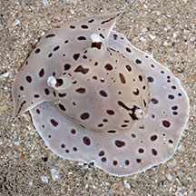

|
|
| sea slugs text index | photo index |
| Phylum Mollusca > Class Gastropoda > sea slugs > Order Notaspidea |
| Sidegill
slugs Order Notaspidea updated May 2020 Where seen? Some species are sometimes seen on some of our shores. What are sidegill slugs? Sidegill slugs belong to Phylum Mollusca and Class Gastropoda like other snails. Sidegill slugs belong to Order Notaspidae are NOT nudibranchs, which belong to a different Order Nudibranchia. Features: These slugs have a large plume-like gill between the mantle and the foot, usually on the right side of the body. They have a pair of tentacles (called rhinophores) made up of rolled up skin, and a plough-shaped structure (called the oral veil) in front of the head. Some sidegill slugs have an internal shell, others an external shell while one family does not have a shell at all. Many secrete sulphuric acid to deter predators. Most are found in shallow waters. What do they eat? These slugs are carnivorous and have strong jaws with a broad radula. Most feed on sponges, some also feed on hard corals and ascidians. Some even eat other slugs and fishes. |
| Some Sidegill slugs of Singapore |
 Forskal's sidegill slug |
 Moon-headed sidegill slug |
| Other sightings on Singapore shores |
| Order
Notaspidea recorded for Singapore from Tan Siong Kiat and Henrietta P. M. Woo, 2010 Preliminary Checklist of The Molluscs of Singapore. +from our observation ^from WORMS
^Order Pleurobranchomorpha
|
References
|